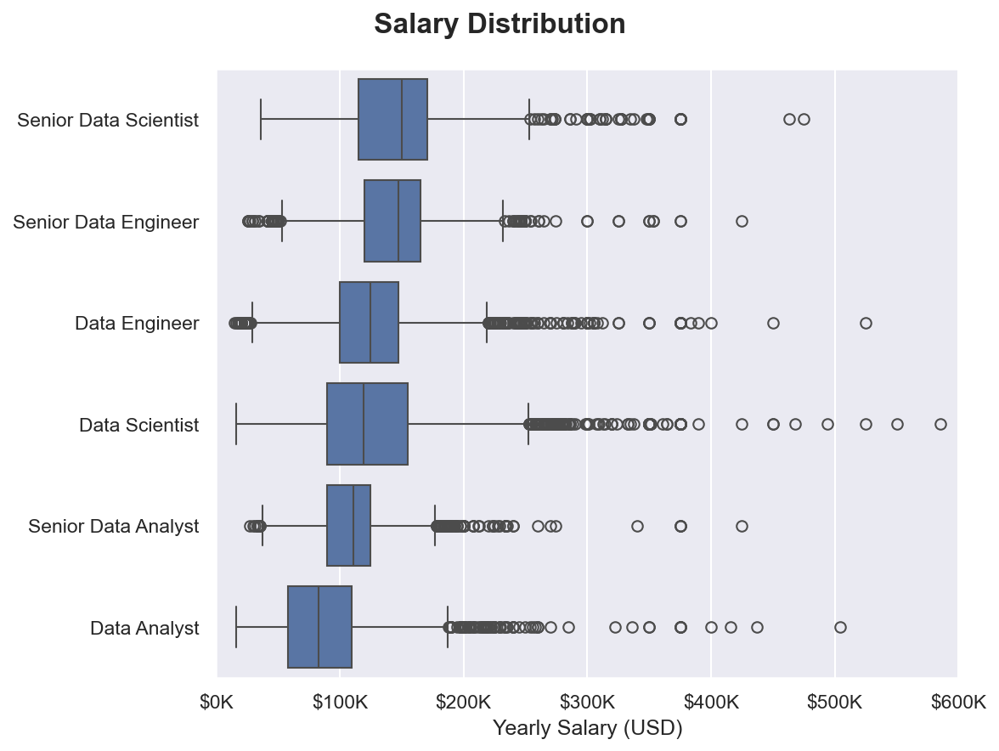

01
Data Jobs Market Analysis
Analyzed 780,000+ global data job postings to identify salary trends, in-demand skills, work-from-home opportunities, and differences across countries and job roles.
Python
Pandas
NumPy
Matplotlib
Seaborn
View Project →